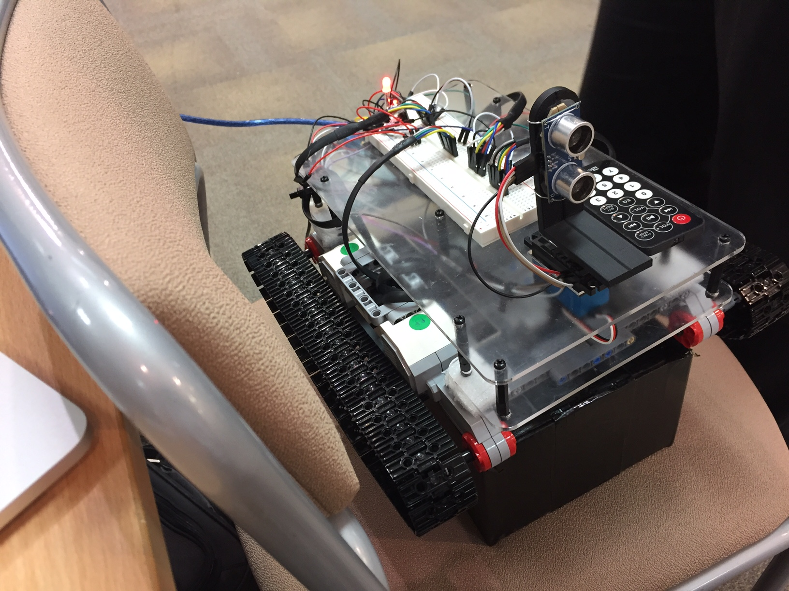
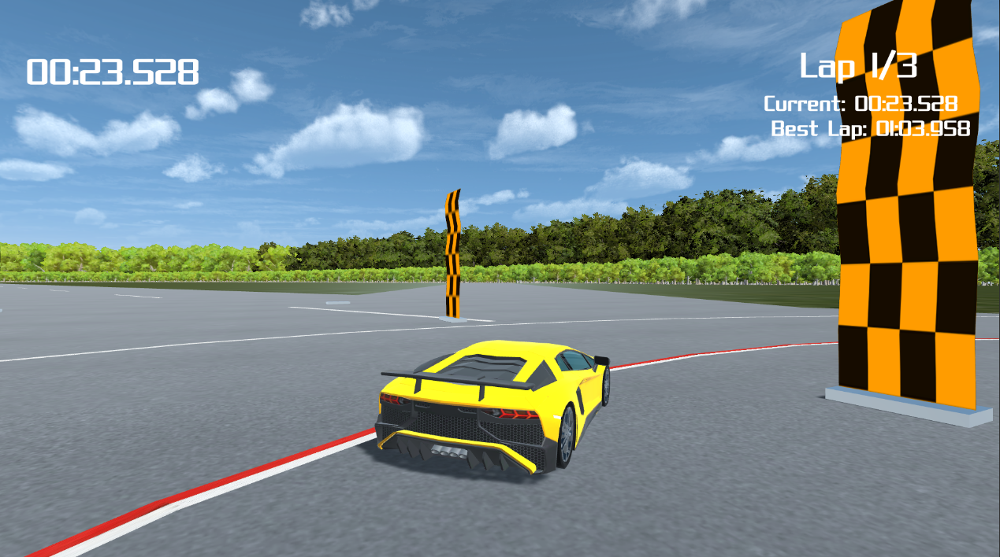
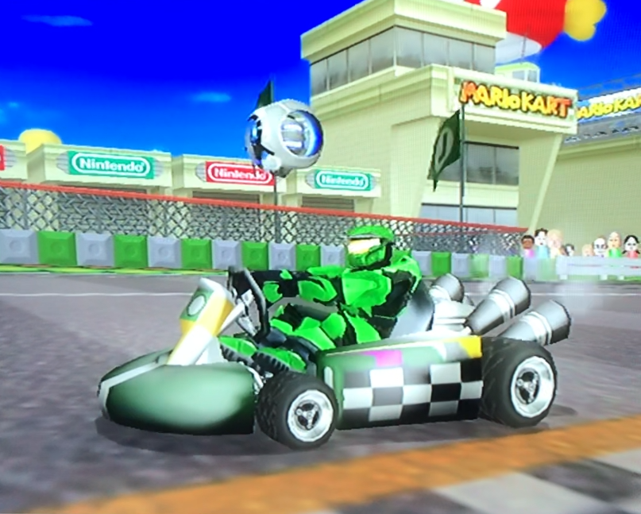

This is a website for me to write about various projects, mostly personal and other things that I find interesting and want to write about. This website was originally made using the Jekyll framework and then rewritten using a custom PHP website builder that I wrote. I could probably write an article on it here, but you're already looking at the result, so there isn't much point.
|  |
EES RobotJan - May 2018During College, I coded and helped build a self navigating robot for the Engineering Education Scheme (EES), using an Arduino for the processing unit and a ultrasound censor for collision detection. The body was made using two sheets of acrylic and a Lego frame to support the motors and track frames. |
|  |
Turbo RacingSep - Dec 2018For my A level Computer Science coursework, I made a racing game in Unity on my Windows-bootcamped MacBook. It had multiple vehicles to select and a rally mode. At some point I want to remake this game now I have more computing power than a Macbook but I want to make all of my own assets, I might wait until after university but I'm not sure yet. |
|  |
Modding Mario Kart WiiAug - Oct 2020Little unusual I know, but I've had a lot of fun messing around with the Wii filesystem and modding the first game I became good at, and is still a really good game today despite the dated graphics, but thats nothing a pc emulator can't fix, which I also set up. |